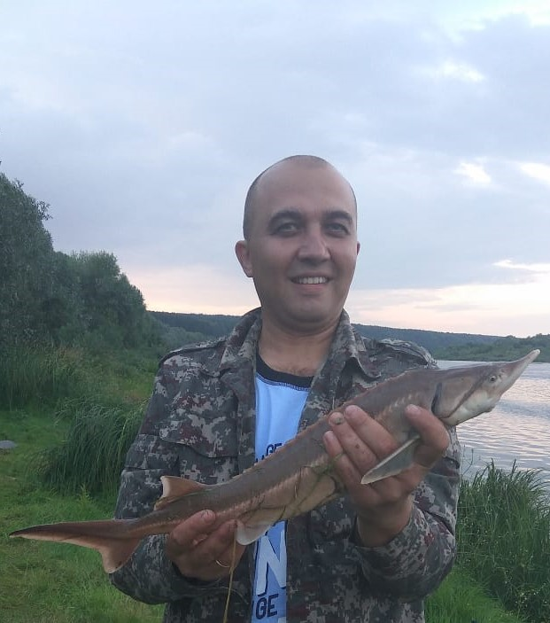

Рыбалка

Одним из моих хобби является рыбалка. Я люблю со своей семьёй и друзьями выезжать на природу на несколько дней. Иногда мы снимаем домики но чаще всего разбиваем палаточный лагерь. Мы ловим рыбу, варим уху, жарим рыбу, коптим, делаем вкусный шашлык. Пища на костре необычайно вкусна, в домашних условиях так не приготовить! После захода солнца, под красивым звёзным небом у костра мы общаемся, веселимся, поём песни под гитару. Такой активный отдых нравиться всем и запоминается на всю жизнь. Это прекрасный способ отдохнуть от городской суеты, насладиться красотой природы, свежим воздухом, звёздным небом. Советую всем!